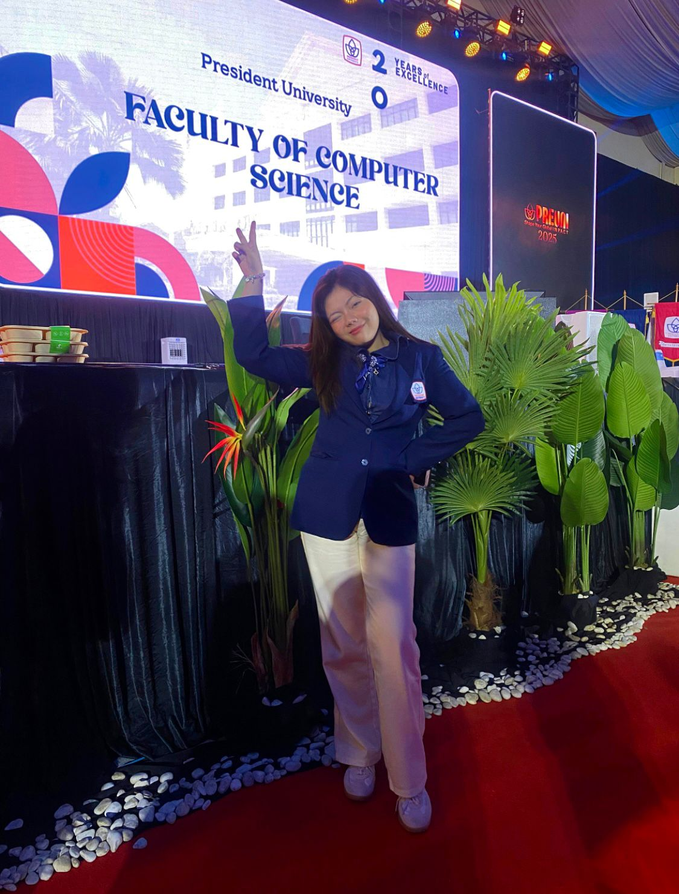

Arizka Sulistia Oktavia
23 Oktober 2008
Hello, my name is Arizka Oktavia. One of my hobbies is watching movies and series, because I believe films can give us new perspectives and inspiration. One of my favorite movies is Legally Blonde. I love this movie because it shows how determination, confidence, and passion can break stereotypes and open new opportunities. It inspires me to always believe in myself and never be afraid to try something new. I consider myself as someone who loves challenges. That is why I chose to pursue my studies in Information Technology, majoring in Cyber Security at President University. Cyber Security is a challenging yet very important field, and I want to prepare myself to face those challenges with both skills and strong determination. Joining PUFA (President University Friendship Association) is also one of my goals, because I want to grow not only academically but also personally. PUFA will give me the chance to connect with new people, improve my communication and teamwork skills, and contribute positively to the community. I believe being part of PUFA will help me become a better version of myself while supporting others along the way.